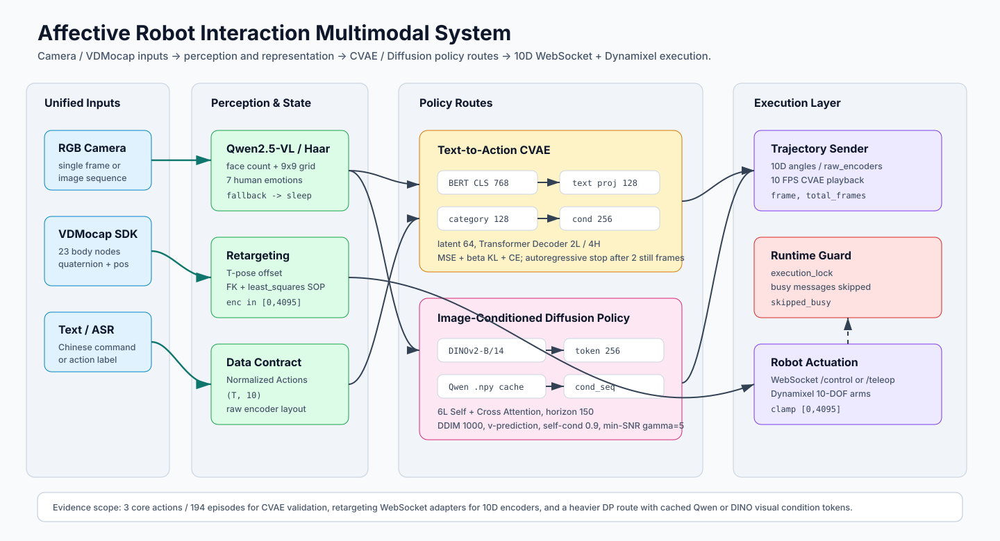
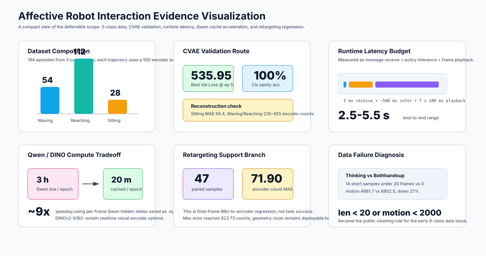

Affective Robot Interaction: A Multimodal System for Companion Robots
An end-to-end social-robot interaction stack that routes camera and VDMocap inputs through Qwen2.5-VL / OpenCV perception, Text-to-Action CVAE and image-conditioned Diffusion Policy branches, then sends 10D encoder trajectories through WebSocket + Dynamixel execution.
3-class robot-reaction episodes for CVAE validation
10D
shared encoder/action trajectory contract
2.5-5.5s
documented end-to-end closed-loop latency
1000
DDIM steps in the image-conditioned DP route
~9x
Qwen embedding cache acceleration for DP training
System Boundary
Affective Robot Interaction owns the interaction path from camera / VDMocap input to robot reaction execution. The perception layer extracts face position, human emotion, and mocap pose; the policy layer compares a text-driven CVAE route with an image-conditioned Diffusion Policy route; the execution layer normalizes everything into a 10D encoder trajectory for WebSocket + Dynamixel playback.
The public evaluation scope is precise: the report validates the 3 core actions 举手 / 伸手 / 坐着 with 194 episodes and about 60 frames per episode, while the codebase keeps an 8-category CVAE training entry for broader interaction coverage. Retargeting is treated as the actuator-facing motion adapter, not as the task-success metric for the full system.
This is not a VLA or Flow-Matching policy page. The defensible framing is multimodal perception + generative trajectory policies + calibrated 10D execution; Diffusion Policy remains a heavier route without a matched task-success benchmark in the available evidence.
Model Architecture

The redrawn architecture separates unified inputs, Qwen/OpenCV + mocap state extraction, Text-to-Action CVAE, image-conditioned DP, and the WebSocket/Dynamixel execution contract.
Interface Contracts
Boundary
Contract
Evidence
Perception
OpenCV Haar counts faces and returns 9x9 grid coordinates; Qwen2.5-VL handles position fallback and 7-class facial-expression parsing, then maps to 6 robot emotions with 熟睡 as low-interference fallback.
The SDK struct exposes 23 body nodes, positions, quaternions, gyro, acceleration, velocity, hand nodes, and face blendshape fields.
vd_mocap_listener_struct.py:28-130
CVAE route
BERT tokens plus one-hot action category feed a conditional VAE; the report script uses action_dim=10, latent_dim=64, hidden_dim=128, 2 decoder layers, 4 heads, and max_seq_len=64.
docs/scripts/01_train_cvae.py:29-44
DP route
DINOv2-B/14 or cached Qwen hidden states become 256D condition tokens for a 6-layer action Transformer with self-attention and cross-attention over dynamic image/action lengths.
Generated trajectories are sent frame-by-frame as 10 encoder counts through WebSocket adapters; CVAE playback defaults to 10 FPS and protects robot execution with a non-blocking lock.
The report route uses BERT-base-chinese CLS features projected to 128D, a 128D category embedding, a 64D latent variable, and a 2-layer / 4-head Transformer Decoder to generate 10D action trajectories. Training is parallel over padded sequences; inference switches to autoregressive decoding and stops after two consecutive low-motion frames.
Loss: MSE_recon + beta * KL + CE_cls, with beta annealed from 0.01 to 0.10.
Experiment script: 50 epochs, batch 16, BERT LR 2e-5, other layers 2e-4.
Main training entry also keeps an 8-condition, latent-128, 4L/8H configuration; the headline metrics come from the 3-condition report script.
BERT-base-chineselatent 642L / 4H(T,10)
Image-Conditioned Diffusion Policy
The heavier route conditions action diffusion on visual tokens. DINOv2-ViT-B/14 provides a 768D frame feature path, while Qwen-VL hidden states can be precomputed to 256D .npy condition sequences so training bypasses live VL inference.
Diffusion wrapper: DDIM sampling, 1000 steps, cosine schedule, v-prediction objective, self-conditioning probability 0.9, min-SNR gamma 5.
Dynamic masks preserve variable action and image lengths during training.
DINOv2-B/14Qwen cond_seqtoken 256horizon 150
Runtime And Visualization

The runtime visualization keeps dataset, CVAE training, latency, Qwen caching, retargeting regression, and data-quality diagnosis in separate evidence boxes.
The execution path is intentionally conservative: receive a valid text message, acquire a non-blocking execution lock, run policy inference in a background thread, clamp each 10D frame, stream at 10 FPS, and increment skipped_busy when a new request arrives during playback.
Best Val Loss 535.95 @ epoch 5; final Val Cls Acc 100%
50-epoch RTX 4090 report run; category accuracy is a sanity check because text equals class label.
Reconstruction
Sitting MAE 56.4; Waving/Reaching 235-455 counts
Validation-set qualitative reconstruction; larger-motion classes still need more data.
Runtime
5 ms receive + ~500 ms inference + T x 100 ms playback; total 2.5-5.5 s
Documented WebSocket + Dynamixel execution path at 10 FPS.
Qwen cache
~3 h/epoch live Qwen -> ~20 min/epoch precomputed Qwen
DP training acceleration through cached 256D visual condition tokens.
Retargeting support
T-pose 2048 +/- 3; Teleop Transformer 71.90-count MAE on 47 final-frame pairs
Motion-interface evidence, not full Affective Robot Interaction task success rate.
The strongest public claim is system integration with measured internal modules. The available files do not provide a controlled task-success benchmark comparing CVAE vs DP on real-robot rollouts, so the page reports training, reconstruction, runtime, and interface measurements separately.
Engineering Failures And Fixes
T-pose Calibration
Global mocap quaternions are not robot joint commands. The retargeting SOP records a T-pose offset, solves J1/J2 with FK residuals and least_squares, mirrors the left arm, and maps relative angles to encoder center 2048.
Thinking Data Diagnosis
The early 8-class data showed thinking trajectories that were shorter and lower-motion than bothhandsup: 14 samples under 20 frames, average motion 4981.7 vs 6852.5, and 27% lower motion. The fix became a repeatable cleaning rule over length and motion.
Qwen Compute Path
Live Qwen-VL features made DP training too slow. The solution extracts per-frame hidden states once, projects them to 256D, stores .npy condition tokens, and lets the DP model use the same forward interface with image_sequence=None.
Execution Isolation
Robot playback is serialized with a non-blocking execution lock. New messages that arrive during motion execution are dropped into skipped_busy, which prevents overlapping 10D trajectories from racing the same Dynamixel chain.